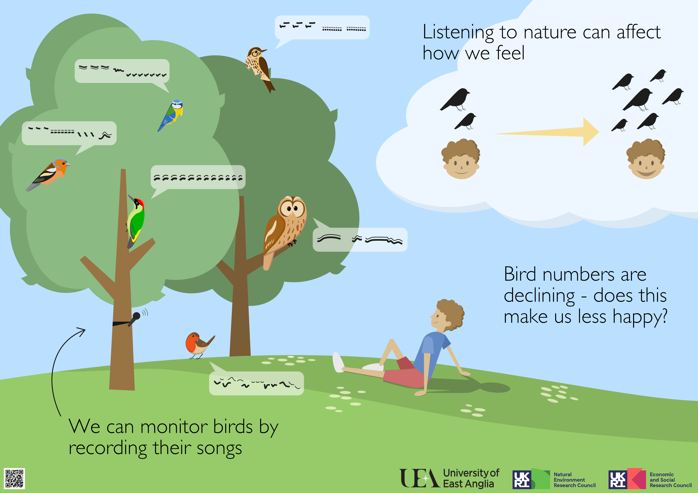
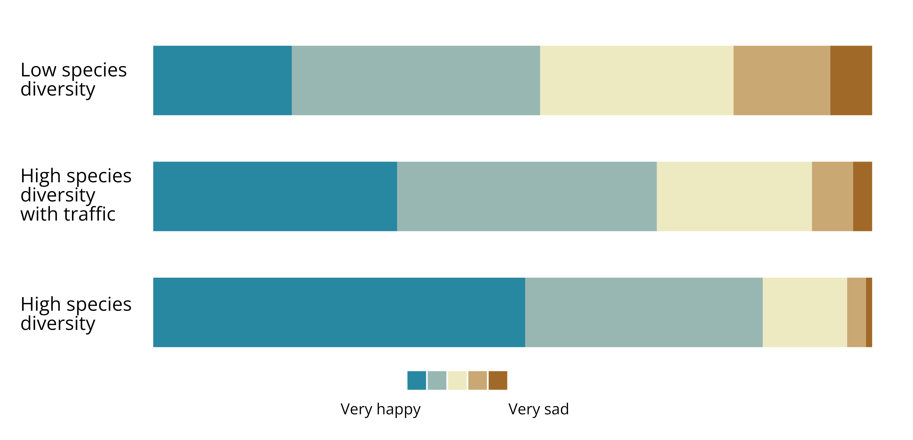

Latitude 2023
Outreach at Latitude Festival.
When at a music festival, the things we generally think of are music, mud, and manky portaloos; festivals rarely bring to mind the surrounding nature at the site.
Members of the Valuing Nature’s Soundscapes team from the University of East Anglia took time away from their deskbound lives to encourage festivalgoers at Latitude to think beyond the sounds of the festival to the surrounding natural soundscapes. Among the many stalls, activities, and crowds, we set up our ‘Sound Lab’, where we exposed festivalgoers to sounds of nature and asked how it made them feel.
Increasingly, children are growing up with less opportunity for interactions with the natural world. We wanted to cultivate curiosity and encourage a deeper connection with nature – and sound is a great way to do this. We aimed to introduce the over 350 children (and their parents) who visited our Sound Lab to concepts of acoustic ecology and encourage them to think about the soundscapes we experience every day, and how this can affect how we feel.
We attempted to give the children an immersive acoustic experience, showing sounds in real time using a live spectrogram generator – a tool that visually represents sounds in real-time. Given the festival context of our activity, we gave children a chance to make their own soundscapes using musical instruments, before moving on to soft toys of UK bird species with inbuilt birdsong recordings. This created much excitement among the children as identifiable visual spectrogram patterns of different species’ songs appeared in front of their eyes. We finished the activity by giving the children the opportunity to create a complex species-rich dawn chorus soundscape.
 Simon Butler and Claire Buchan standing awkwardly in the science tent. Click to enlarge
Simon Butler and Claire Buchan standing awkwardly in the science tent. Click to enlarge
 Poster created for the activity. Click to enlarge
{kind=link}
Sounds contribute to our experience of nature, and scientists are becoming increasingly aware of the effects on our wellbeing. While the children inside were making ‘music’, we couldn’t help but do a bit of science.
We asked adults to listen to three different soundscapes which varied in the number of species singing and presence of traffic noise. After listening to each soundscape, they were asked to anonymously report how each made them feel. Once we got home (and had a shower), we tallied up the data and were excited to find evidence that species rich soundscapes make people happier than species poor soundscapes, but this benefit is lower if there is road traffic noise in the background:
 Proportion of respondents scoring each soundscape by how it made them feel. Click to enlarge
{kind=link}
This underlines the importance of biodiversity in our experience of nature, and makes us wonder what negative consequences biodiversity loss may be having on human wellbeing.
This activity was facilitated by the SAW Trust, an education charity that promotes engagement with science through the arts/creativity.